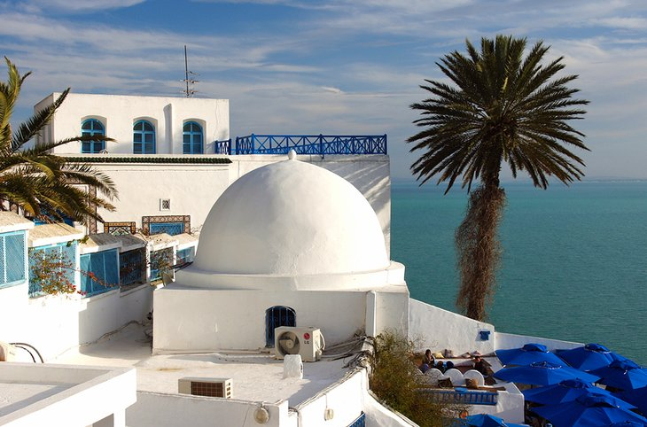

THE MOST BEST PLACES
...............

BENI MTIR
El Djem Amphitheater

DJERBA

Carthage
The National Bardo Museum

La Tunisie est un pays d'Afrique du Nord situé sur la côte méditerranéenne et en bordure du désert du Sahara. Le musée national du Bardo à Tunis , la capitale, expose des pièces archéologiques allant des mosaïques romaines à l'art islamique. Le quartier de la Médina, avec son souk animé encercle l'imposante mosquée Zitouna. À l'est, sur le site de l'ancienne cité de Carthage, se trouvent les thermes d'Antonin et d'autres ruines, et le musée national de Carthage et ses nombreux objets.
There are six international airports in Tunisia that you can fly into. Most likely, you will land at Tunis-Carthage International Airport (TUN) near Tunis. The airports are quite modern and convenient. You can change money directly at the airport (the rate is same everywhere in Tunisia) and get a SIM card with data. If you plan to make phone calls, having a local number saves you quite a lot – the roaming rate in Africa can be expensive (USD 3 per minute with my operator). Before taking off, you should check whether you need a tourist visa for Tunisia. Citizens from 97 countries can visit Tunisia visa-free for up to 90 days. These countries include the US, Canada, all EU countries (except Cyprus), Australia, New Zealand, Argentina, Brazil, China, and Russia.
...............